07-实现特征检测及描述¶
特征点检测¶
现在，我们已经可以从图像中提取基于形状的特征（如角），但是我们如何实际使用这些特征来检测整个对象呢？特征点又称作特征向量，首先我们看一下一座山的特征。

假设我们想要一种在其他图像中也能够检测到这座山的方法。 一个角点是不足以在其他图像中识别此山峰，但是，我们可以采用一组特征来定义该山峰的形状，将它们组合为一个数组或矢量，然后使用该组特征来 创建一个山探测器！
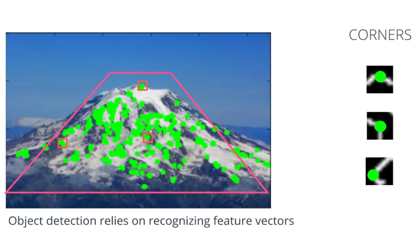
目标（整座山）的检测依赖着这些特征的检测，我们将这些特征组合在一起，称作“特征向量”。特征向量能够稳定地表示物体的形状。
举个简单的例子：
已此梯形为例，我们已经计算好了梯度和边缘。如果我们将这个图打散成多个图的网格。以梯形为中心为起点，观察每个格子的梯度方向。我们可以将数据平面化，创建出一个一维数组。这个数组就组成了梯形的一个特征向量，这个特征向量就是梯度方向的向量。
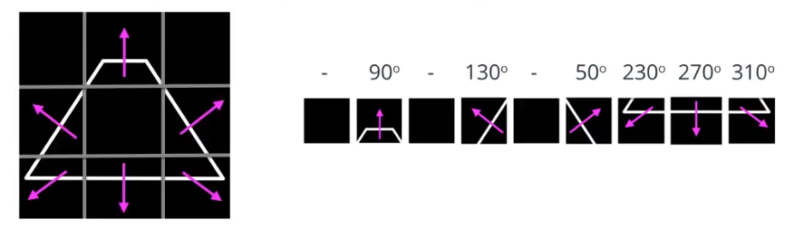
对圆形也是如此，计算网格中每个格子的梯度方向，这些所有角度所组成的向量就代表了这个圆形。
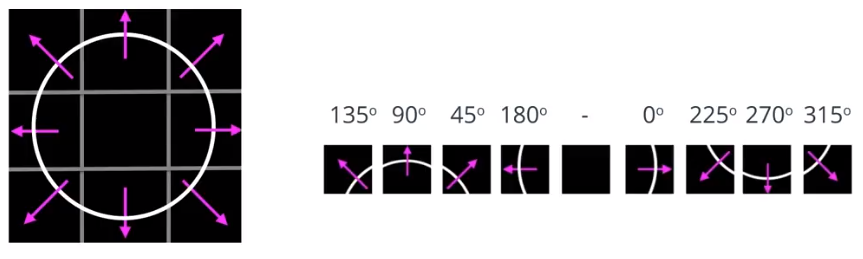
如果要准确地识别任意大小、视角的梯形和圆形，这些向量必须要有一定的灵活度，才能在不同场景下识别出同一形状。同时，向量也应该保持足够的独特性，才能区分出不同的形状。
特征点检测方法分类¶
-
人工设计的特征点检测算法：Harris、FAST、SIFT、SURF、ORB
-
基于深度学习的检测：人脸关键点，点云特征点
-
人工的标记的特征点：人工贴点、二维码
特征点的要求¶
差异性：可区别于非特征点
重复性：相同的特征点在不同的视角中可以被检测到
鲁棒性：对噪声环境变化的鲁棒性
高效性：具有较高的计算检测效率
纯关键点检测算法：FAST
纯特征描述算法：FREAK、BRIEF、HOG
关键点和特征描述都有：SIFT、SURF、ORB（基于FAST, BRIEF）、BRISK
以下两个算法已被申请专利，所以位于
opencv_contrib目录SIFT：尺度不变特征变换检测
SURF：加速鲁棒特征
SIFT尺度不变特征变换¶
SIFT（Scale-Invariant Feature Transform）可以翻译为尺度不变特征变换，之前我们使用了哈里斯Harris这样的角点检测工具，他们是具有旋转不变形的，这意味着，即使我们把图片进行了旋转，我们仍然能找到相同的角点。因为即使图片旋转了，之前的角点仍旧是角点。但是如果是图片进行了缩放呢？原本一个角点可能就不再是角点了。如下图，原本在小图中的角放大之后，就变成了边缘。

因此，在2004年，哥伦比亚大学（ University of British Columbia）的D.Lowe在他的论文《尺度不变关键点中的图像特征》（Distinctive Image Features from Scale-Invariant Keypoints）中提出了一种新的尺度不变特征变换（SIFT）算法，该算法可用于提取关键点并计算其描述符。具体分为以下几个步骤：
- 尺度空间的极值检测
- 关键点定位
- 方向分配
- 关键点描述符
- 关键点匹配
由于该算法已申请了专利，所以这个模块在OpenCV里是非免费的。
英文版论文： https://www.cs.ubc.ca/~lowe/papers/ijcv04.pdf
中文版译文：https://www.cnblogs.com/cuteshongshong/archive/2012/05/25/2506374.html
import cv2
import numpy as np
img = cv2.imread('./data/house.jpg')
gray= cv2.cvtColor(img,cv2.COLOR_BGR2GRAY)
# 创建SIFT检测器
sift = cv2.xfeatures2d.SIFT_create()
# 检测灰度图
kp = sift.detect(gray,None)
# 绘制检测出的特征点
# img=cv2.drawKeypoints(gray, kp, None)
img=cv2.drawKeypoints(gray, kp, None, flags=cv2.DRAW_MATCHES_FLAGS_DRAW_RICH_KEYPOINTS)
cv2.imshow("dst", img)
if cv2.waitKey(0) == 27:
cv2.destroyAllWindows()
- 输出结果
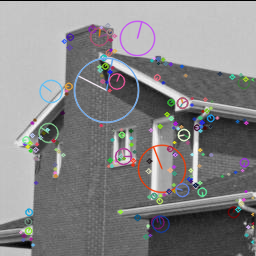
这里sift.detect(gray,None)用来查找图片中的素有关键点，如果希望只在图片中的某个区域查找，则可将掩膜Mask作为第二个参数。每个关键点都是一个特殊的结构对象，具有许多属性，例如其（x，y）坐标，有意义的邻域的大小，描述其方向的角度，描述其关键点强度等。
cv2.drawKeypoints函数默认的flags打印参数是cv2.DRAW_MATCHES_FLAGS_DEFAULT，只在关键点上打印圆圈，我们可以传入cv2.DRAW_MATCHES_FLAGS_DRAW_RICH_KEYPOINTS参数，他会画出一个关键点尺寸大小的圆，并标出其方向信息。
SURF加速鲁棒特征¶
SURF（ (Speeded-Up Robust Features)）可以翻译为加速鲁棒特征，之前我们了解了用于关键点检测和描述的SIFT。但是它相对较慢，人们需要更快的版本。 2006年，由Bay, H. 和 Tuytelaars, T. 以及 Van Gool, L三个人发表的另一篇论文《 SURF：加速鲁棒特征》介绍了一种称为SURF的新算法。顾名思义，它是SIFT的加速版本。
在SIFT中，D.Lowe用高斯差、近似高斯的拉普拉斯算子来寻找尺度空间。 SURF走得更远。下图显示了这种近似值的演示。这种近似的一大优势是，借助积分图像可以轻松地计算出带盒滤波器的卷积。并且可以针对不同规模并行执行。 SURF还依赖于Hessian矩阵的行列式来确定规模和位置。

由于SURF只是SIFT的改进版本，所以所有使用方式和SIFT一致，只是在创建SURF的时候，修改一下创建函数即可。以下为一个原图，我们对其进行检测
SURF检测¶
import cv2
import numpy as np
img = cv2.imread('./data/butterfly.jpg')
gray= cv2.cvtColor(img,cv2.COLOR_BGR2GRAY)
# 阈值范围选300-500最好
surf = cv2.xfeatures2d.SURF_create(400)
# 直接查找关键点和描述符
kp, des = surf.detectAndCompute(img,None)
print("keypoints1: ", len(kp)) # 688
# 这里共检测到688个点，但是全部显示出来太多了，我们可以调整阈值再次进行检测
surf.setHessianThreshold(30000)
kp, des = surf.detectAndCompute(img,None)
print("keypoints2: ", len(kp)) # 49
# img=cv2.drawKeypoints(gray, kp, None, flags=cv2.DRAW_MATCHES_FLAGS_DEFAULT)
img=cv2.drawKeypoints(gray, kp, None, flags=cv2.DRAW_MATCHES_FLAGS_DRAW_RICH_KEYPOINTS)
cv2.imshow("dst", img)
if cv2.waitKey(0) == 27:
cv2.destroyAllWindows()
可以看到SURF更像是斑点检测器。它检测到蝴蝶翅膀上的白色斑点。我们也可以使用其他图像进行测试。
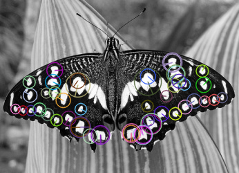
U-SURF检测¶
import cv2
import numpy as np
img = cv2.imread('./data/butterfly.jpg')
gray = cv2.cvtColor(img, cv2.COLOR_BGR2GRAY)
# 阈值范围选300-500最好
# upright: True表示不计算特征的方向，False反之
surf = cv2.xfeatures2d.SURF_create(400, upright=True)
# 直接查找关键点和描述符
kp, des = surf.detectAndCompute(img, None)
print("keypoints1: ", len(kp)) # 688
# 这里共检测到688个点，但是全部显示出来太多了，我们可以调整阈值再次进行检测
surf.setHessianThreshold(30000)
kp, des = surf.detectAndCompute(img, None)
print("keypoints2: ", len(kp)) # 49
img = cv2.drawKeypoints(gray, kp, None, (0, 0, 255), flags=cv2.DRAW_MATCHES_FLAGS_DRAW_RICH_KEYPOINTS)
cv2.imshow("dst", img)
if cv2.waitKey(0) == 27:
cv2.destroyAllWindows()
- 输出结果
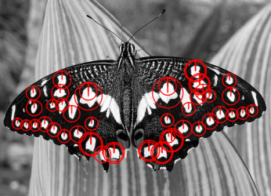
ORB特征检测¶
ORB (Oriented FAST and Rotated BRIEF) 特征
ORB对象识别算法，在增强现实、机器人、SLAM、无人驾驶等方向应用很广泛，这种情况需要实时地处理输入的视频流。ORB算法可以对图像中的关键点快速创建特征向量。然后使用这些特征向量识别图像中的对象。
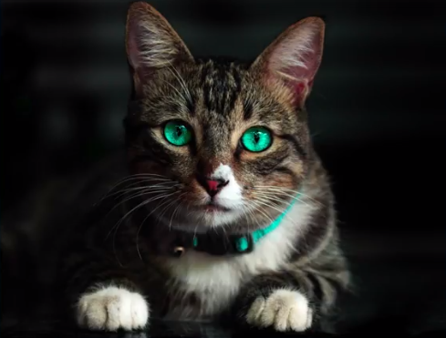
ORB首先会从图像中查找一些特殊的区域，作为关键点，我们可以把关键点看做图像中比较突出的小区域，这些区域的像素值会从浅色急剧地变成深色。下图展示了ORB在这个图像上生成的关键点。我们可以在猫眼睛周围和面部特征的边缘看到这些圆形特征点。
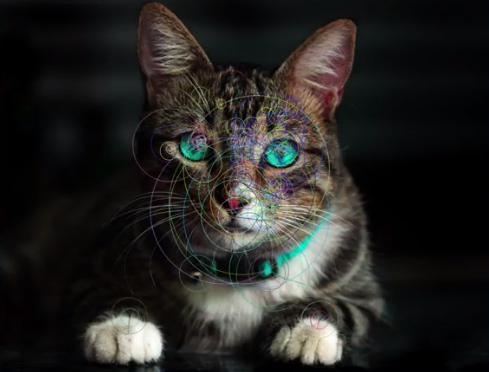
当找到这些关键点后，ORB会为每个关键点计算相应的特征向量。ORB算法创建的特征向量只包含1和0，因此我们称之为二元特征向量。1和0的顺序会根据特定关键点和其周围的像素区域而变化。该向量表示关键点周围的强度模式。因此，多个特征向量可以用来识别更大的区域。
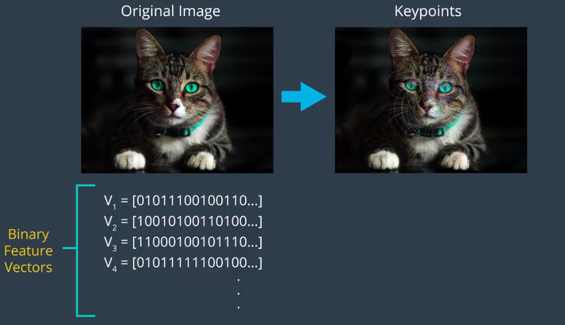
ORB不仅速度快，而且不受噪点的影响，不受图像旋转、放大的影响。接下来，我们将深入了解Fast和Brief算法的原理。
FAST¶
ORB特征检测的第一步就是查找图像中的关键点，这一步由FAST算法来完成。FAST是Features from Accelerated Segments Test的简称。其关键点检测速度很快，是SIFT的100倍，但是原始的检测结果不具有尺度和旋转不变性。
1、确定特征点位置
通过检测局部像素灰度变化来确定特征点的位置
- 以像素点为圆心构建一个离散的圆
- 比较圆周上的像素与p点的像素值差
- 当有连续的n个像素值明显亮于或暗于p，则p被检测为特征点，Fast9, Fast12
2、实现尺度不变性
构建图像金字塔，在金字塔的每一层上检测关键点
3、实现旋转不变性
通过灰度质心法（Intensity Centroid）确定图像的主方向
给定一个图像中的像素p，FAST会比较p周围小圆圈中的16个像素值。该圆圈的每个像素会被分成三类：比p亮、比p暗、和p相似。我们将像素亮度称为I_p，即像素的强度（Intensity of pixel p）
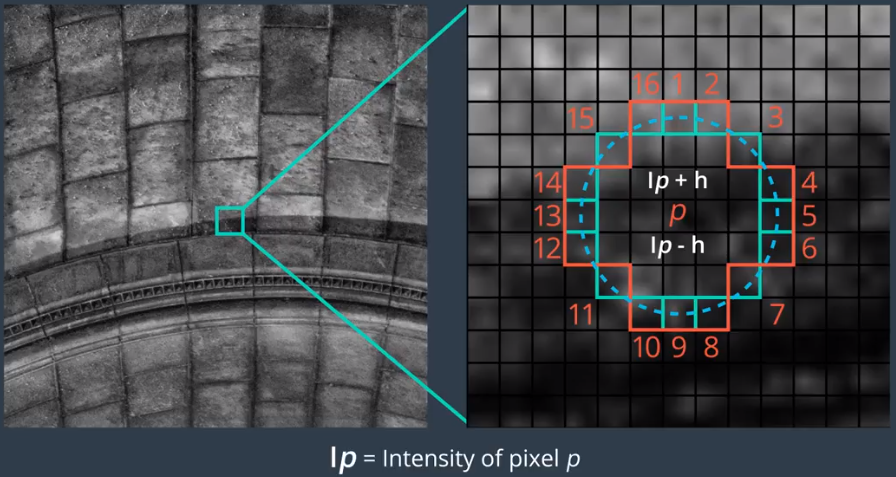
如果像素亮度为I_p，则对于指定的阈值h，更亮的像素将是亮度超过I_p + h的像素，更暗的像素将是亮度低于I_p - h的像素，相似像素是亮度在两个值之间的像素。
对像素进行分类后，如果圆圈上有8个以上的相连像素亮于或暗于p，则将p像素选作关键点。FAST高效的原因是仅将p与圆圈中的4个等距像素进行对比，其效果与和素有16个周围像素对比的效果一样
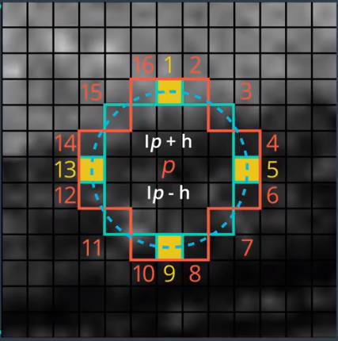
例如：我们只需将p与像素1、 5 、 9、 13进行对比，在这种情况下，如果至少有一对连续像素的亮度高于或低于p，则将p选作关键点。这种优化使得在整个图像中搜索关键点的时间缩短了4倍。
这些关键点可以给我们提供什么样的信息呢？对比临近像素的亮度有何意义呢？我们来观察FAST在这个图像上找到的一些关键点。
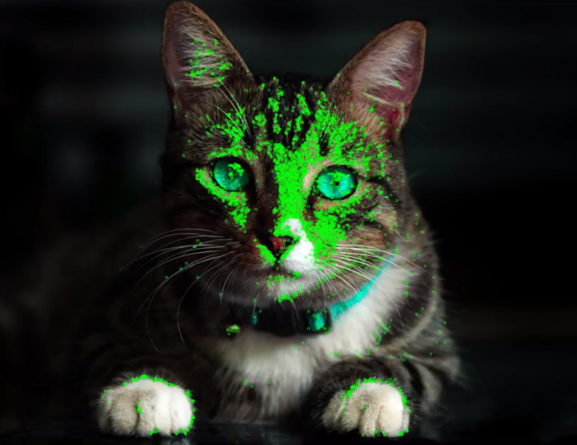
在眼部周围、鼻子周围各有一组关键点，可以看出来关键点位于亮度有变化的区域。此类区域通常确定了某些边缘。比如猫爪子，边缘定义了猫的边界，以及脸部区域的界限。因此这些关键点是我们能够识别这只猫，而不是图像中的其他对象或是背景。
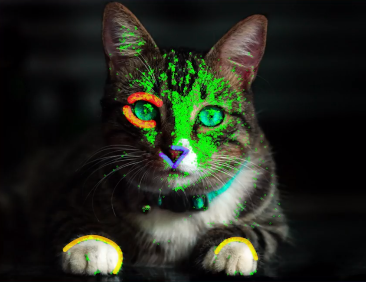
所以，通过FAST发现的关键点为我们提供了确定图像中对象的边缘所在位置的信息。但是，这些关键点仅仅提供了边缘的位置，并不包含强度变化方向的信息。接下来我们可以去区分水平和竖直边缘了。现在我们已经知道了ORB如何使用FAST确定图像中的关键点了，我们将了解ORB如何使用BRIEF算法将这些关键点转换成特征向量。
BRIEF¶
ORB算法的第二步是将第一步算法发现的关键点转变成特征向量，这些特征向量可以共同表示一个对象，要创建特征向量，ORB就会用到BRIEF算法。
BRIEF算法是Binary Robust Independent Elementary Features的简称，即二进制健壮的独立基本特征。它的作用是根据一组关键点创建二元特征向量，二元特征向量又称作二元描述子（描述符），是仅包含1和0的特征向量。
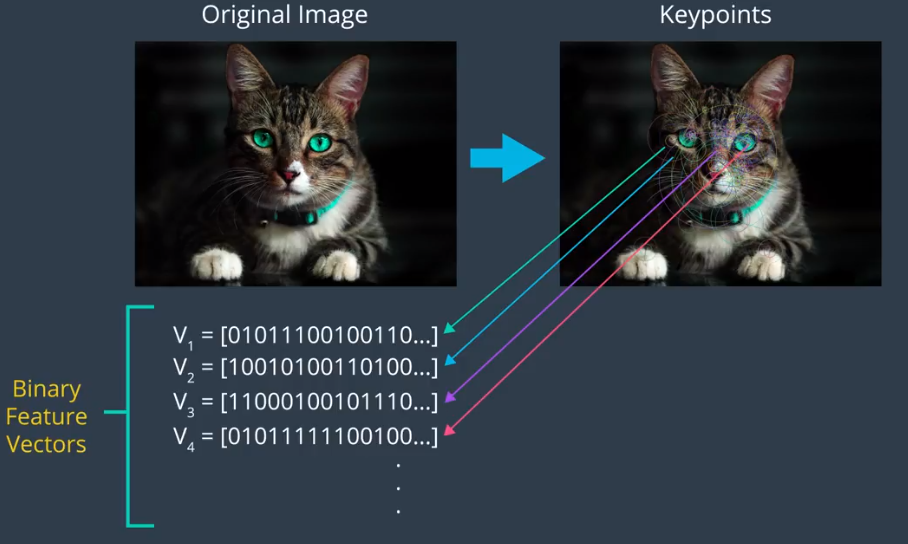
在BRIEF中，每个关键点由一个二元特征向量描述，该向量有128-512个位，其中仅包含0和1
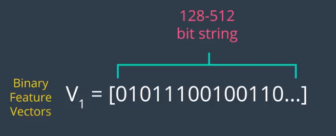
计算机运行的是二进制或机器代码，因此使用二元特征向量的一大优势是可以非常高效地存储在内存中，并且可以快速计算。
这些特性不仅使 BRIEF 速度非常快（速度对实时应用来说极为关键），而且使 BRIEF 能够在计算资源非常有限的设备（例如智能手机）上运行。
BRIEF 如何为每个点创建这些二元描述符？BRIEF 算法首先利用高斯核，对给定图像进行平滑处理，以防描述符对高频噪点过于敏感。
接着，对于给定关键点，例如猫爪上的这个点，BRIEF 从该关键点周围界定好的邻域内随机选择一对像素。关键点周围的邻域称为 Patch，它是一个具有特定像素宽度和高度的正方形，这里显示的随机对中的第一个像素是一个蓝色正方形，它是从以关键点为中心的高斯分布中抽取的一个像素，标准偏差（分散趋势）为 σ。
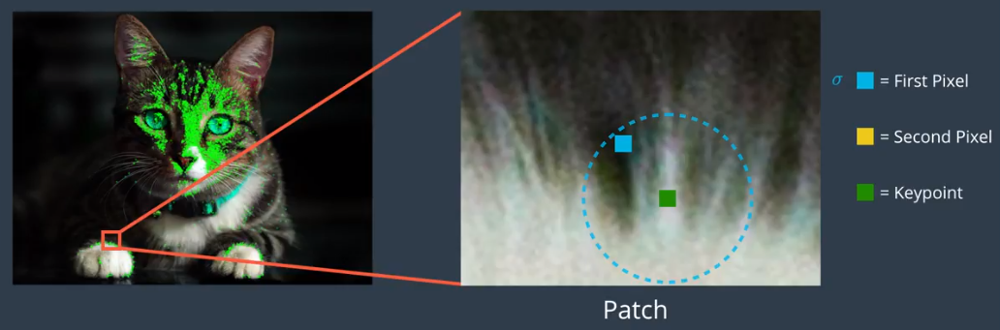
这里显示为黄色正方形的像素是随机对中的第二个像素，它是从以该第一个蓝色像素为中心的高斯分布中抽取的像素，标准偏差为 σ/2，经验表明这种高斯选择，提高了特征匹配率
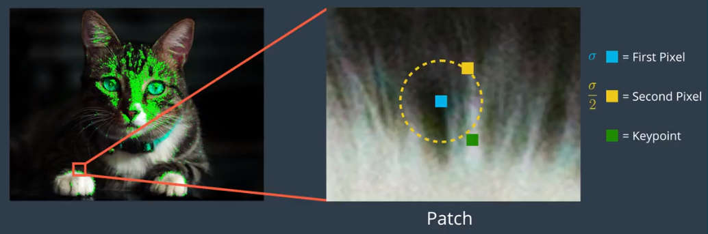
BRIEF 然后开始为关键点构建二元描述符，方法是如下所示地比较这两个像素的亮度，如果第一个像素比第二个亮，则为描述符中的相应位分配值 1，否则分配值 0。
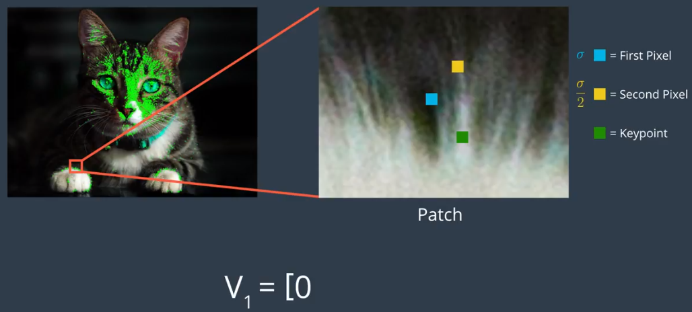
在这个示例中，第二个像素比第一个亮，因此我们为特征向量的第一个位分配值 0
特征向量的第一个位对应的是这个关键点的第一个随机点对。
现在 BRIEF 针对同一关键点，选择新的随机像素对，比较它们的亮度并为特征向量中的下个位分配 1 或 0
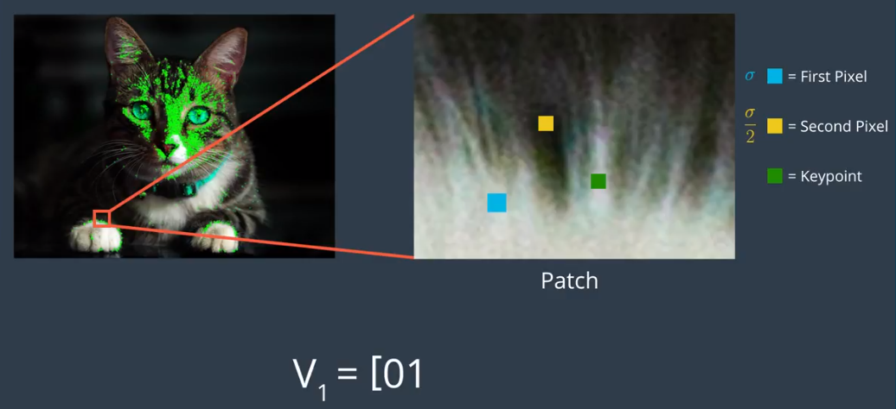
在示例中，我们看到现在第一个像素比第二个亮，因此，为特征向量中的第二个位分配值 1
对于 256 位向量，BRIEF 会针对同一关键点重复这一流程 256 次，然后转到下个关键点，接着将 256 个像素亮度比较结果放入该关键点的二元特征向量中，BRIEF 像这样为图像中的每个关键点创建一个向量。
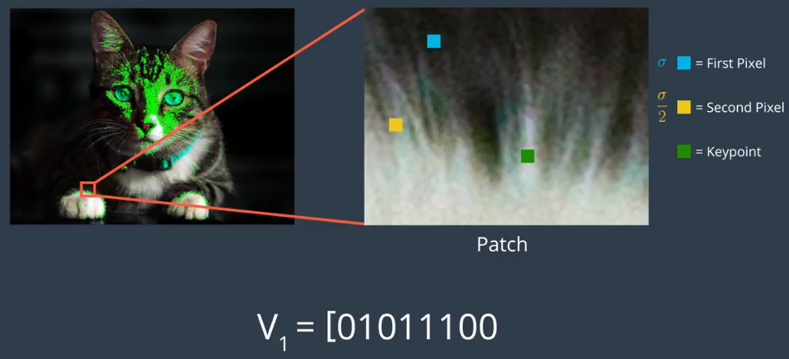
现在我们已经知道 BRIEF 如何为由 FAST 发现的关键点构建特征向量。
接下来，我们将了解 ORB 如何利用这些技巧创建不受图像旋转、缩放和噪点影响的向量。
尺度和旋转不变性¶
ORB 使用 FAST 检测图像中的关键点，并且通过额外的几个步骤确保无论对象的大小或位置如何，都能检测到图像中的对象。
尺度不变性
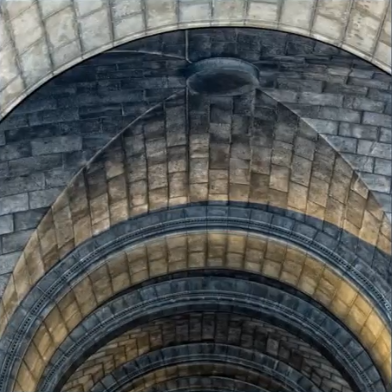
给定一个图像，ORB 算法首先开始构建图像金字塔，图像金字塔是单个图像的多尺度表示法。由一系列原始图像的不同分辨率版本组成，金字塔的每个级别都由上个级别的图像下采样版本组成，下采样是指图像分辨率被降低。
在此示例中，图像按照 1/2 比例下采样，因此一开始的 4x4 正方形区域，现在变成 2x2 正方形。 图像的下采样包含更少的像素，并且以 1/2 的比例降低大小，这是一个包含 5 个级别的图形金字塔示例，在每个级别 图像都以 1/2 的比例下采样，到了第四级别，图像的分辨率是原始图像的 1/16。
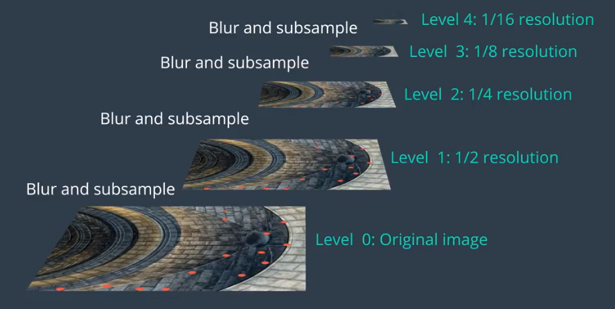
ORB 创建好图像金字塔后，它会使用 FAST 算法从每个级别不同大小的图像中快速找到关键点，因为金字塔的每个级别由原始图像的更小版本组成，因此原始图像中的任何对象在金字塔的每个级别也会降低大小，通过确定每个级别的关键点，ORB 能够有效发现不同尺寸的对象的关键点，这样的话 ORB 实现了部分缩放不变性。 这一点很重要，因为对象不太可能在每个图像中的大小都完全一样，尤其是像猫这样的对象某个时刻可能靠近相机，在另一个时刻离相机很远，甚至躲起来。
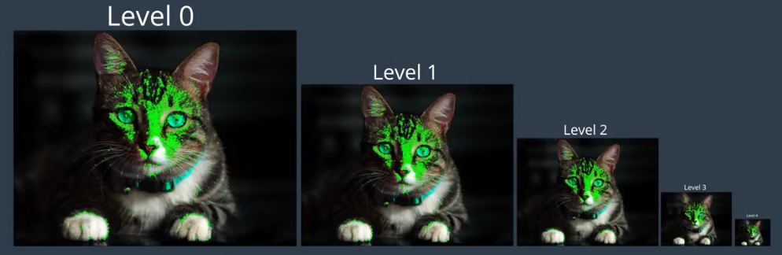
旋转不变性
现在 ORB 获得了与这个图像金字塔每个级别相关的关键点，在发现金字塔所有级别中的关键点后，ORB 现在为每个关键点分配一个方向，例如朝左或朝右，取决于该关键点周围的强度是如何变化的。
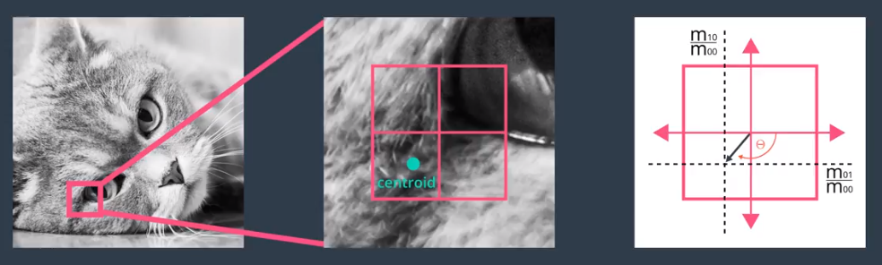
我们详细了解下背后原理，ORB 首先选择金字塔级别 0 中的图像，对于该图像 ，ORB 现在将计算关键点的方向 方法是首先计算以该关键点为中心的方框中的强度形心，强度形心可以看做给定 patch 中的平均像素强度的位置 计算强度形心后，通过画一条从关键点到强度形心的向量，获得该关键点的方向，如此处所示，这个关键点的方向是向下并朝左，因为这个区域的亮度朝着这个方向增强。
当ORB在计算BRIEF描述子时，就可以以关键点为圆心，以关键点P和强度形心Q的连线作为X轴建立二维坐标系。
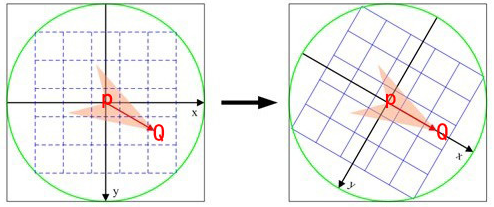
在图1中，P为关键点。圆内为取点区域，每个小格子代表一个像素。现在我们把这块圆心区域看做一块木板，木板上每个点的质量等于其对应的像素值。根据积分学的知识我们可以求出这个密度不均匀木板的质心Q。计算公式如下。其中R为圆的半径。
我们知道圆心是固定的而且随着物体的旋转而旋转。当我们以PQ作为坐标轴时（图2），在不同的旋转角度下，我们以同一取点模式取出来的点是一致的。这就解决了旋转一致性的问题。
为金字塔级别 0 的图像中的每个关键点分配方向后，ORB 现在为所有其他金字塔级别的图像重复相同流程，需要注意的是，在每个图像金字塔级别，Patch 大小没有缩减，因此，相同 Patch 在较小的金字塔级别，其覆盖的图像区域将更大，导致关键点的大小各不相同，可以从此处看出这一点。即较大的圆形关键点是在较小的金字塔层级中检测出来的。
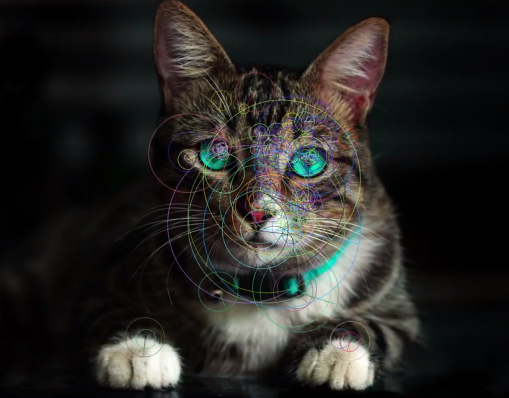
在此图中，圆圈表示每个关键点的大小，更高的金字塔级别中的关键点大小更大，找到关键点并为其分配方向后， ORB 现在使用修改后的 BRIEF 版本创建特征向量，这个修改后的 BRIEF 版本称为 rBRIEF，即 Rotation-Aware BRIEF。无论对象的方向如何，它都可以为关键点创建相同的向量，使得 ORB 算法具有旋转不变性，意味着它可以在朝着任何角度旋转的图像中检测到相同的关键点。 和 BRIEF 一样， rBRIEF 首先在给定关键点周围的已界定 patch 中，随机选择 256 个像素对，以构建 256 位向量，然后根据关键点的方向角度旋转这些随机像素对，使随机点的方向与关键点的一致。最后， rBRIEF 对比随机像素对的亮度，并相应地分配 1 和 0 创建对应的特征向量。为图像中的所有关键点创建的所有特征向量集合，称之为 ORB 描述符
特征匹配¶
距离度量
- 欧氏距离
大部分特征都用的是欧氏距离，计算两个向量之间每个维度的差值的平方和
- 马氏距离
较少用，针对特定场景，通过 \Sigma 为每个维度分配一些权重
- 汉明距离
\oplus表示异或
汉明距离是以理查德·卫斯里·汉明的名字命名的。在信息论中，两个等长字符串之间的汉明距离是两个字符串对应位置的不同字符的个数。换句话说，它就是将一个字符串变换成另外一个字符串所需要替换的字符个数。例如：
1011101 与 1001001 之间的汉明距离是 2。
2143896 与 2233796 之间的汉明距离是 3。
"toned" 与 "roses" 之间的汉明距离是 3。
ORB算法最大的特点就是计算速度快 。 这首先得益于使用FAST检测特征点，FAST的检测速度正如它的名字一样是出了名的快。再次是使用BRIEF算法计算描述子，该描述子特有的2进制串的表现形式不仅节约了存储空间，而且大大缩短了匹配的时间。
例如特征点A、B的描述子如下。
A：10101011
B：10101010
我们设定一个阈值，比如80%。当A和B的描述子的相似度大于90%时，我们判断A,B是相同的特征点，即这2个点匹配成功。在这个例子中A,B只有最后一位不同，相似度为87.5%，大于80%。则A和B是匹配的。
我们将A和B进行异或操作就可以轻松计算出A和B的相似度。而异或操作可以借组硬件完成，具有很高的效率，加快了匹配的速度。
我们已经知道 ORB 算法的原理，但可能会疑问到底可以如何使用 ORB 描述符进行对象识别呢？我们来看一个示例以了解 ORB 如何检测到具有不同大小和方向的同一对象。 假设我想在其他图像中检测到此人的面孔，例如在这个多人合影中，我们将第一张图像称为训练图像，第二张图像，即要对其进行人脸检测的图像，称为查询图像。
给定这个训练图像，我想在这个查询图像中查找相似的特征，第一步是计算训练图像的 ORB 描述符并将其存储到内存中。
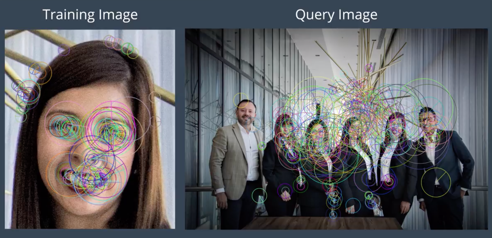
ORB 描述符将包含二元特征向量，用于描述这个训练图像中的关键点。第二步是计算并保存查询图像的 ORB 描述符，获得训练和查询图像的描述符后，最后一步是使用相应的描述符对这两个图像进行关键点匹配，通常使用匹配函数来完成这一步。 匹配函数的目的是匹配两个不同图像的关键点，方法是比较这两个图像的描述符，看看它们是否很相近可以匹配。当匹配函数对比两个关键点时，它会根据某种指标得出匹配质量，这种指标表示关键点特征向量的相似性。可以将这个指标看作与两个关键点之间的标准欧几里得距离相似性。某些指标会直接检测特征向量是否包含相似顺序的 1 和 0。需要注意的是，不同的匹配函数使用不同的指标来判断匹配质量。对于 ORB 等使用的二元描述符来说，通常使用汉明指标，因为它执行起来非常快。 汉明指标通过计算二元描述符之间的不同位数量判断两个关键点之间的匹配质量。在比较训练图像和查询图像的关键点时，差异数最少的关键点对被视为最佳匹配。匹配函数对比完训练图像和查询图像中的所有关键点后，返回最匹配的关键点对。
我们的训练图像和查询图像之间的最匹配点显示在此处，可以清晰地看出训练图像和查询图像之间最匹配的点主要对应的是训练图像的面孔。有一两个特征不是太匹配，原因可能是该图像区域的强度模式比较相似。因为大部分点对应的是训练图像中的脸部，可以看出匹配函数能够在查询图像中正确地识别该面孔。
文档参考¶
关于ORB的最重要的事情是它来自“ OpenCV Labs”。该算法由Ethan Rublee，Vincent Rabaud，Kurt Konolige和Gary R. Bradski在他们的论文《 ORB: An efficient alternative to SIFT or SURF》于2011年提出。正如标题所述，它是SIFT和SURF的良好替代方案，其计算消耗和匹配性能是其专利。不过，SIFT和SURF已获得专利，您应该为其使用付费。但是，ORB不是！
英文论文：https://www.researchgate.net/publication/221111151_ORB_an_efficient_alternative_to_SIFT_or_SURF
中文翻译：https://blog.csdn.net/u011344545/article/details/80421915
ORB基本上是FAST关键点检测器和Brief描述符的融合，并进行了许多修改以增强性能。首先，它使用FAST查找关键点，然后应用哈里斯Harris角点度量在其中找到前N个点。它还使用金字塔生成多尺度特征。
代码实现¶
import numpy as np
import cv2
from matplotlib import pyplot as plt
img = cv2.imread('./data/blox.jpg', 0)
# 初始化ORB检测器
orb = cv2.ORB_create(500)
# 使用ORB查找检点
kp = orb.detect(img, None)
# 使用ORB计算描述符
kp, des = orb.compute(img, kp)
# 绘制关键点，忽略尺寸和方向
img2 = cv2.drawKeypoints(img, kp, None, color=(0, 255, 255), flags=0)
plt.imshow(img2), plt.show()
- 输出结果
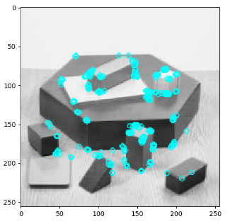